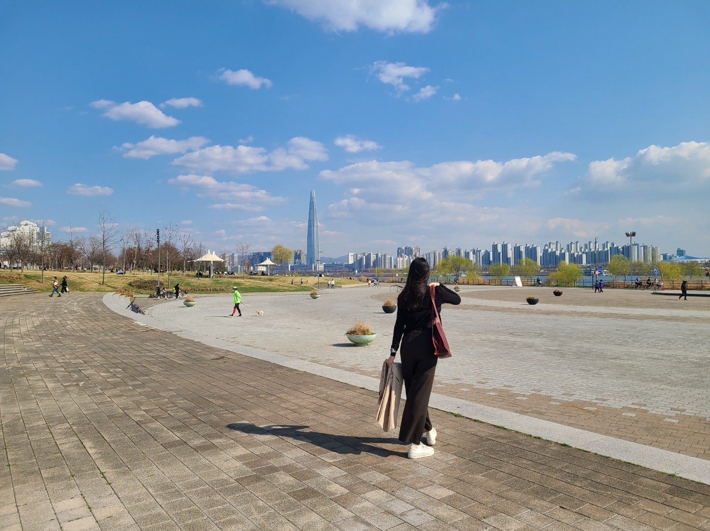

안태경
| Front-end Developer |
| [유데미x스나이퍼팩토리] |
| 본명 |
안태경 |
| 출생 |
199x년 x월 2x일 (??세) |
| 국적 |
대한민국 |
| 학력 |
대학교 졸업 |
| MBTI |
ESFP |
| 별명 |
안경태 |
| Github |
github.com/FDTK |
1. 개요

사진 찍기를 좋아하는 프론트엔드 개발자 지망생
2. (개발자) 공부 전
고등학교를 졸업한 후 모대학의 생명시스템학과에 진학했으나 편입으로
화공생명공학과로 전과하였다. 졸업 후 제약회사에서 연구원으로 1년간
재직하였지만 그 뒤 웹디자인을 배우면서 웹개발에 흥미가 생겨 본격적으로 개발
공부를 시작한다.[1]
3. 개발 활동
- Software Engineering Bootcamp 39기
- - `JavaScript`, `React` 등 언어 및 프레임워크 학습
- - 일일 알고리즘 문제 풀이
- - 디스코드(Discord)를 이용한 동기들과의 지식 공유
- - 페어 프로그래밍 : 커뮤니케이션 및 코드 리뷰
- - 팀 프로젝트 : 스택오버플로우 클론 코딩, 웹사이트 개발
- 반응형 앱&웹디자인 콘텐츠 제작
- - `HTML`, `CSS`, `jquery`를 이용한 웹사이트 제작
- - 포토샵, 일러스트레이터를 활용한 이미지 편집 및 드로잉
- - 홈페이지 메인화면 드롭다운 메뉴, 좌우로 움직이는 배너
4. 여담
- html을 많이 까먹었다.
- 2021년, 코로나에 한 번 걸렸었다.
- 해외여행을 매우 좋아한다.